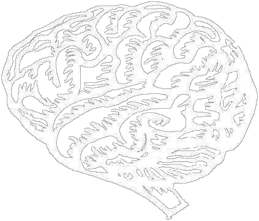

Supernovas, the glamorous death throes of massive stars, have pushed scientific knowledge further and further into the unknown for thousands of years. Our current project, SNEWS, is only the most recent chapter in a very long story.
Table of ContentsThe Crab Nebula, leftovers of a supernova. Curious? (Image courtesy NASA/HST/CXC/ASU/J. Hester et al.)
Further Reading: Online Resources
Further Reading: Books
Test Your Understanding!
SNEWS has now cordially made available a set of "homework"
problems, based upon the astronomy taught here, and geared to the
high-school level. Designed to test algebra skills and provoke
critical thinking, these problems are ideal for the teacher
wishing to expand a science curriculum. Each problem should be
comprehensible to a student familiar with basic algebra (up to
logarithms). A typical first-year chemistry class may provide
useful background, since some questions address chemical reactions
and quantities measured in "moles".
Researched, written and maintained by Blake Stacey.
{kind=link}